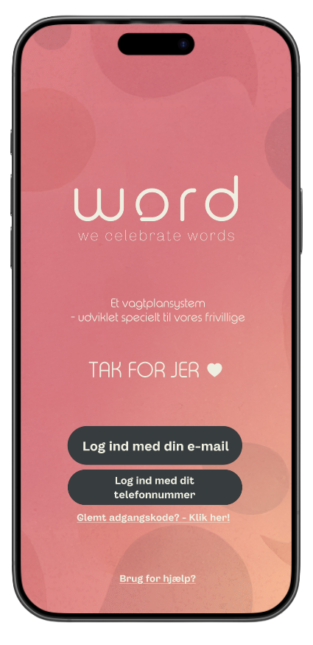
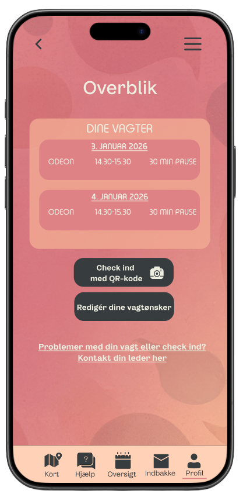
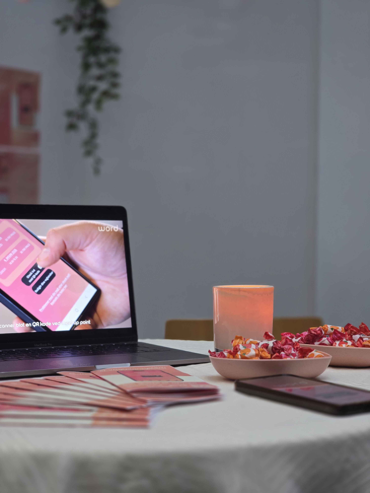
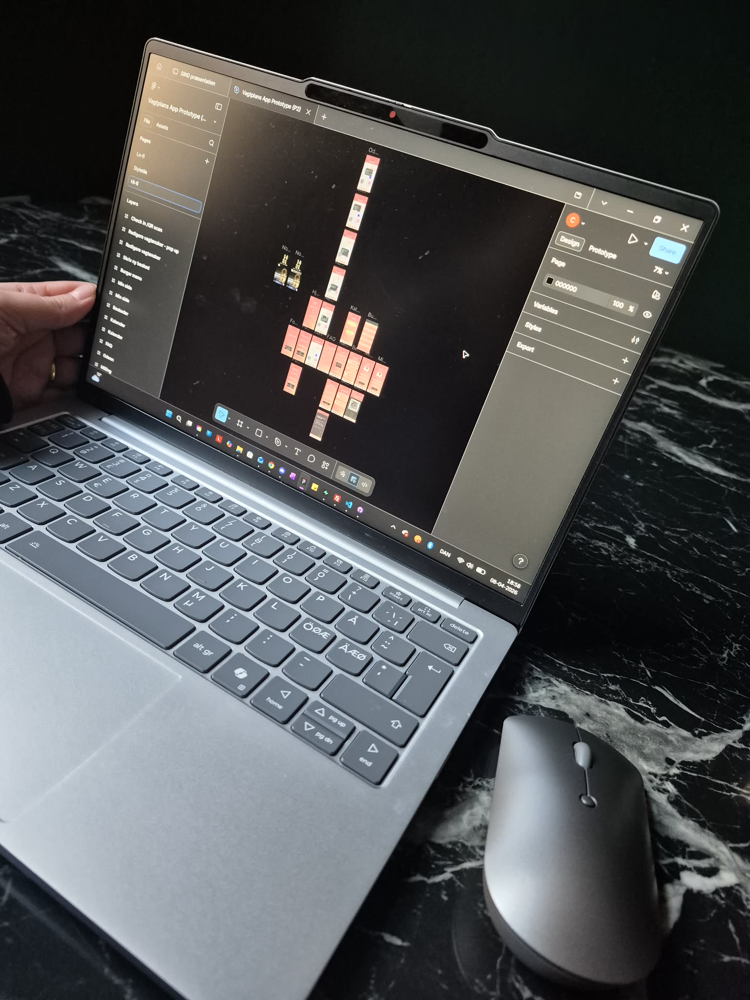

Baggrund
Projektet startede som en del af vores 1. semester, hvor vi udviklede en prototype i Figma til et vagtplansystem for de frivillige ved Word Festival.
Formålet var at skabe en mere brugervenlig løsning til håndtering af vagtplaner.
Efter projektforløbet blev vi kontaktet af Word Festival med henblik på at videreudvikle løsningen og undersøge mulighederne for at implementere den i praksis.

Udfordring
Festivalen anvendte tidligere Excel til planlægning, hvilket skabte flere udfordringer:
- Begrænset overblik over vagter
- Tidskrævende administration
- Vanskeligheder for frivillige med begrænset digital erfaring
Der var derfor behov for en løsning, som var enkel, intuitiv og tilgængelig for alle brugertyper.

Løsning
Vi designede et digitalt vagtplansystem med fokus på brugervenlighed og enkel navigation. Løsningen gør det muligt at:
- Se og vælge ledige vagter
- Få hurtigt overblik over egne vagter
- Administrere vagtplaner som administrator
- Navigere uden behov for teknisk erfaring
Designet er udviklet med fokus på klare brugerflows, visuel enkelhed og minimal kompleksitet.

Proces
Arbejdet omfattede:
- Research og forståelse af brugerbehov
- Udarbejdelse af wireframes og brugerflows
- Design i Figma
- Iteration baseret på feedback
Dette sikrede, at løsningen blev udviklet med udgangspunkt i reelle behov frem for antagelser.

Videreudvikling
Efter det indledende projekt er løsningen blevet videreudviklet med henblik på realisering.
Prototypen er gået fra et statisk design til en interaktiv online løsning, som løbende testes og forbedres.
I udviklingsfasen arbejder vi med:
- Supabase
- Node.js
- React
Projektet er fortsat under udvikling med forventet lancering i efteråret 2026.
Som en del af processen er vi inviteret til at præsentere løsningen for Word Festival for at sikre, at den matcher deres behov og forventninger.